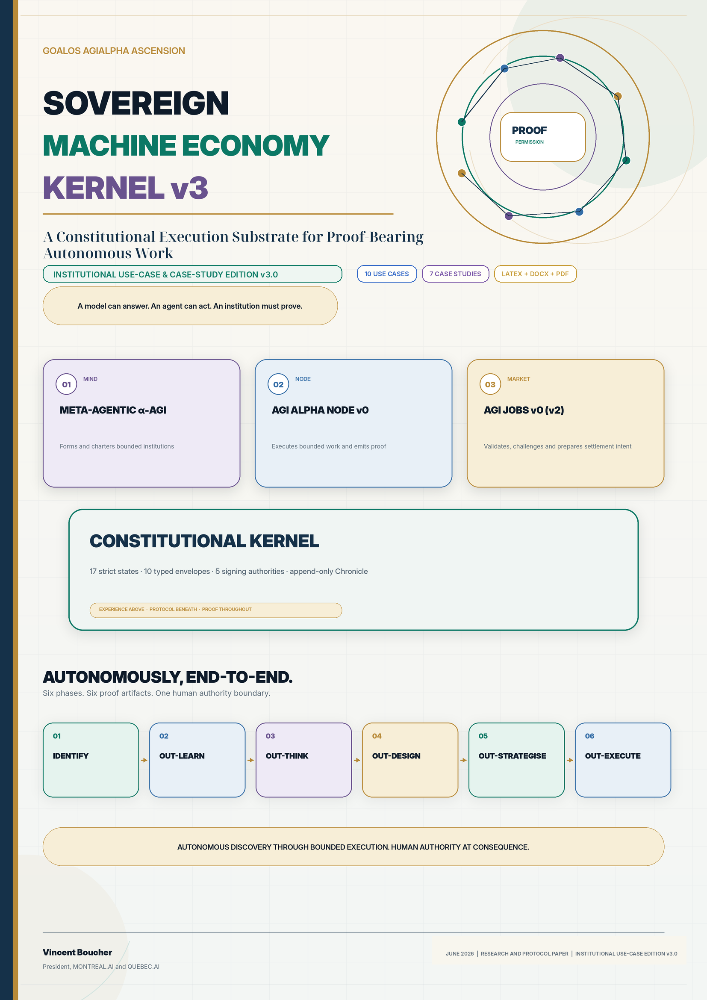
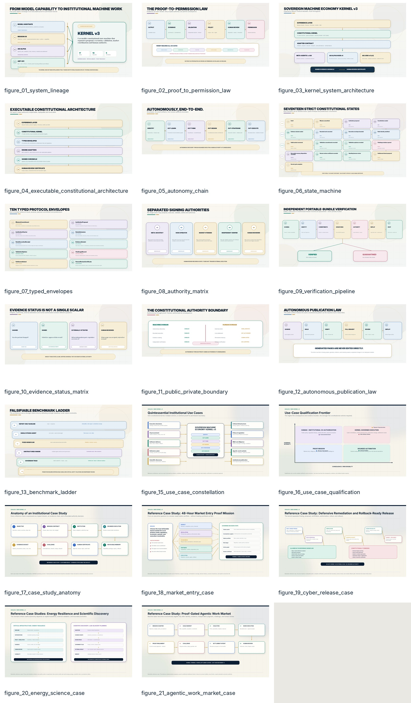

Flagship
Publication PDF
48-page institutional edition with the complete architecture, use-case portfolio, case studies, figures, tables, benchmarks, limitations, and appendices.
Download PDF →The definitive institutional edition: executable constitutional architecture, ten quintessential use cases, seven worked reference case studies, native LaTeX, editable Word, publication PDF, a dedicated companion, figures, templates, and complete QA evidence.

Open the ready-to-read edition, edit the manuscript, reproduce the typesetting, or work directly from the case-study instruments.
48-page institutional edition with the complete architecture, use-case portfolio, case studies, figures, tables, benchmarks, limitations, and appendices.
Download PDF →53-page XeLaTeX publication with source project, bibliography, embedded figures, build script, and reproducible institutional typography.
Download LaTeX PDF →A focused 13-page companion designed for executive briefings, partner conversations, diligence, and use-case qualification workshops.
Download companion →Fully editable DOCX with semantic table headers, image alternative text, embedded institutional figures, and zero reported accessibility findings.
Download DOCX →The complete text in a diffable, version-friendly format suitable for review, source control, excerpts, and derivative publication workflows.
Download Markdown →Machine-readable portfolios, dossier template, qualification checklist, and publication checklist for turning prospective use cases into claim-bounded proof missions.
Dossier template →Each pattern states its evidence burden, authority boundary, metrics, and fail-closed conditions.
These are detailed reference implementations, not customer outcome claims.
Ivory architectural surfaces, deep-navy typography, emerald proof semantics, royal-blue execution, plum intelligence, gold constitutional gates, and rose challenge states.

{kind=link}
{kind=link}